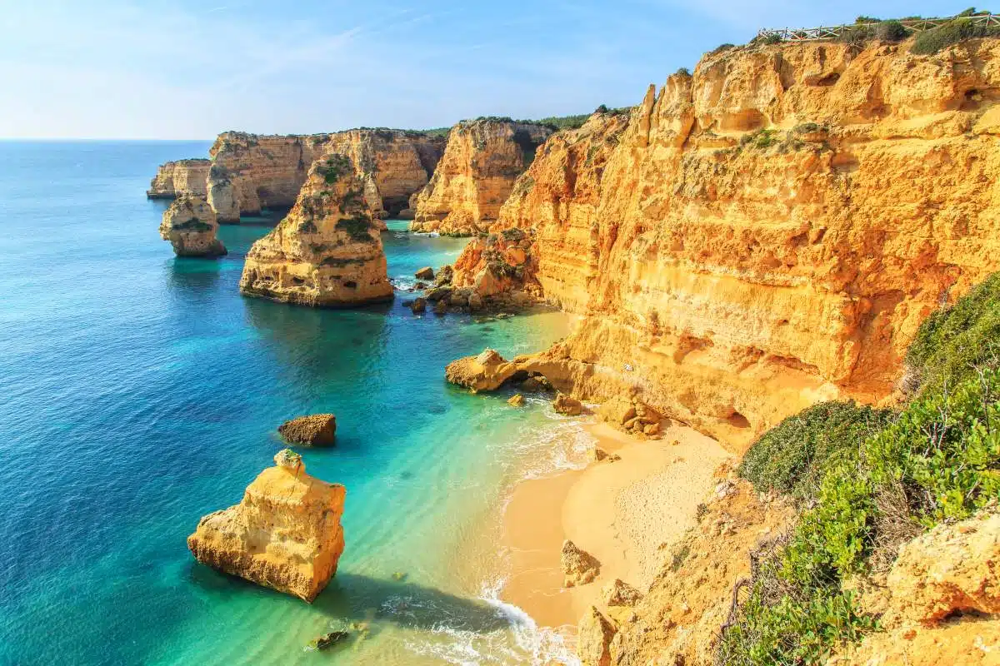
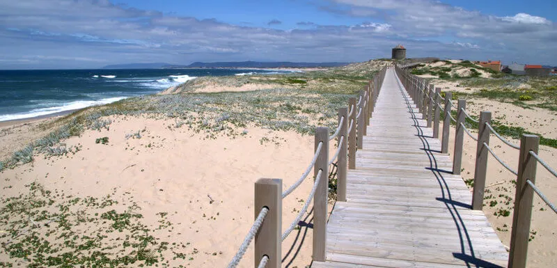
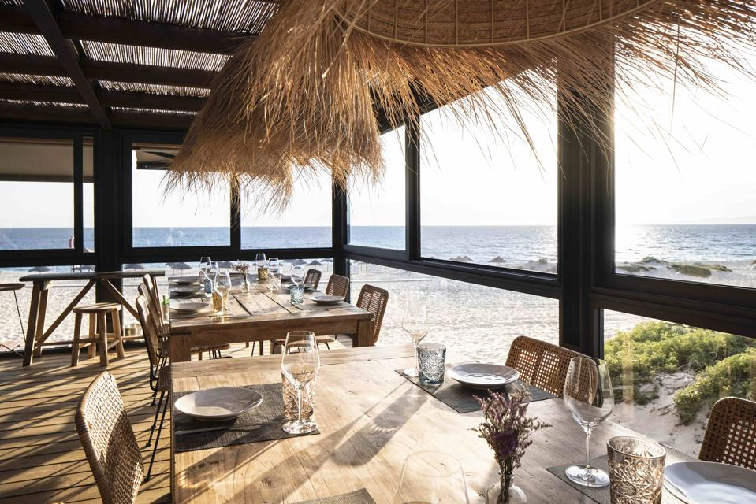

Hidden Coves
Discover secret beaches tucked between towering rock formations, accessible only by boat or winding wooden staircases.

Surfing Hotspots
Catch the perfect wave at renowned surf beaches like Nazaré, Peniche, and Ericeira, the only World Surfing Reserve in Europe.

Family-Friendly Shores
Enjoy calm, crystal-clear waters and excellent facilities at Blue Flag beaches perfect for a relaxing day in the sun.

Island Escapes
Relax on the unique volcanic black sands of the Azores or the pristine golden stretches of Porto Santo.

Coastal Boardwalks
Take a scenic stroll along miles of elevated wooden pathways, protecting the fragile dune ecosystems while offering breathtaking views.

Seaside Dining
End your beach day at a traditional "chiringuito," savoring freshly grilled seafood right on the sand.